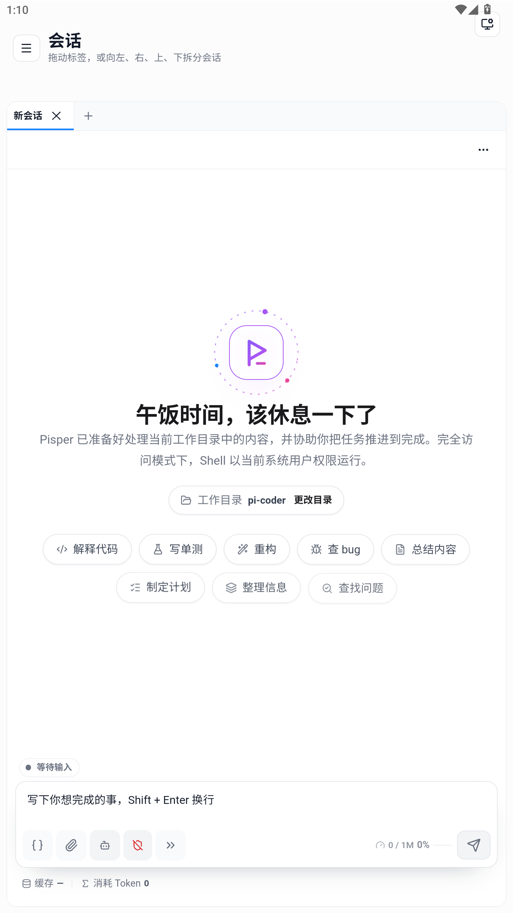

LOCAL-FIRST · MULTI-AGENT
Pisper
给每个想法，开一条分支。
本地优先的多 Agent 应用：每个会话独享模型、上下文、目录与权限。 在追忆里从任意 Turn 长出分支，并行推进 —— 哪条路通了用哪条。
界面
Agent 的每一步，都摆在台面上。
分屏、追忆、标签、终端 —— 没有黑盒，没有「正在运行中」的玄学等待。

为什么选 Pisper
每条分支都走完，再决定用哪条。
-
01
对话开分支
在任意已完成 Turn 衍生新会话，继承上下文，源会话一字不改 —— 像 Git，但给 Agent 用。
-
02
并行不排队
多会话同屏推进，每个 Agent 各自为战，进度肉眼可见。
-
03
工具冷热分明
核心工具常驻上下文；插件、MCP 与技能经网关按需激活、用完即退，再丰富也不挤占。
-
04
前缀稳，缓存热
工具定义稳定排序、提示词形态哈希诊断，吃满 Provider 缓存：长会话更快、更省。
-
05
能力不设限
插件自己写、MCP 随手接、技能按需装 —— 想要就说，说完就有。
-
06
多端不脱节
桌面、TUI 与手机共享同一 Runtime，Git / SVN 工作区都在。
数据安全
默认不出机，出门要审批。
Pisper 没有「我们的云」。数据躺在本机目录里，只有你点名的 Provider、MCP、 搜索和渠道，才会收到完成请求所需的那部分。
LOCAL DATA ROOT
~/.pisper/agent
可通过 PISPER_AGENT_DIR 更改位置
会话、记忆、工作流、日程、用量与连接配置，默认都保存在这里。
-
01
只听本机
Runtime 默认绑定 127.0.0.1，随机启动 Token、受限 Cookie 与写请求 Origin 校验；Pi 遥测默认关闭。
-
02
敏感先脱敏
常见 API Key、Bearer/JWT、私钥与连接串，在记忆落盘与摘要展示前被替换。
-
03
权限有边界
只读、完全访问、单次审批三档；凭据不经普通接口回显给 Agent，宿主 Shell 会移除常见凭据环境变量。
-
04
记忆需确认
自动推断的记忆先进待确认区，你点头之前不参与召回；候选、单条、整个会话都可拒绝或删除。
脱敏只识别常见敏感格式，不是完整 DLP、沙箱或端到端加密；普通 Prompt、文件与工具结果不会被全局匿名化，发送前请自行检查。 凭据目前位于本机数据目录而非系统钥匙串 —— 请看好这个目录和它的备份。
按需更新
哪个该更新，就只更新哪个。
Desktop、TUI、Runtime 独立版本、独立签名、独立更新，失败自动回退到内置版本 —— 更新不赌运气。
界面、桌面集成与统一更新入口
面向终端的轻量交互客户端
会话、工具、模型与自动化服务
同一内核，两个入口
离开桌面，上下文不走。
Ratatui TUI 直连同一 Runtime：用量、思考状态、工具活动、计划与 Git/SVN 工作区能力全都在。 Node.js 20+ 一条命令：
npm i -g pisper
装完即用：/provider 选择 Provider 并配置 API Key；
pisper web 直接打开 Web 前端与本机配置页。


移动端 · MOBILE
把手机接进桌面，不经过云。
手机是客户端，桌面是主机：会话、记忆与数据都留在电脑上，手机经局域网直连。 没有账号，没有云中转 —— 扫码配对即连，出门也能走 Tailscale 组网或 IPv6 直连。
-
01
扫码即连
桌面生成一次性配对二维码，手机 App 扫码完成信任绑定。配对码 5 分钟过期，用一次即废。
-
02
指纹锁定
全程 TLS，证书指纹随二维码带外校验；设备令牌只存哈希，吊销即刻生效。
-
03
断线续传
事件流带游标：切网、锁屏、切后台，回来按游标补齐，一条不丢。
-
04
不经过云
局域网内零依赖；异地走你自己的 Tailscale 组网或公网 IPv6，还是没有服务器成本。
